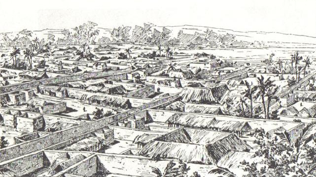
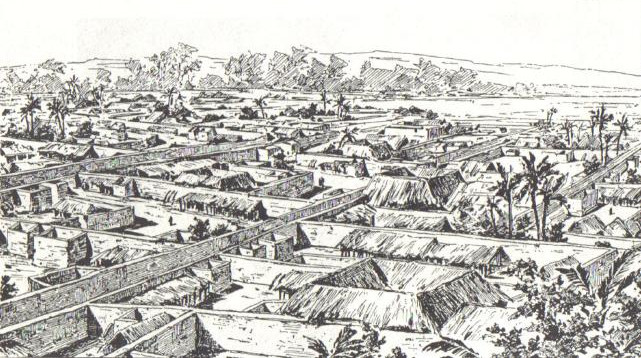

At the end of the 19th century, the Kingdom of Benin had managed to retain its independence during the Scramble for Africa, and the Oba of Benin exercised a monopoly over trade which the Royal Niger Company found irksome.
Following price fixing and refusals by Itsekiri middle men to pay the required tributes, the Oba of Benin ordered a cessation of the supply of oil palm produce to them. The trade embargo brought trade in the Benin River region to a standstill, and the British merchants in the region appealed to the Protectorate's Consul-General to "open up" Benin territories and to send Ovonramwen, the Oba of Benin at the time, into exile.
Acting Consul General James Phillips formally asked his superiors in London for permission to invade Benin City, depose the Oba and replace him with a Native Council, claiming that the costs of such an expedition would be recouped by ivory Philips claimed would be present in the Oba's palace.
Without waiting for a reply or approval, Phillips embarked on a military expedition with two Niger Coast Protectorate Force officers, a medical officer, two trading agents, 250 African soldiers masquerading in part as porters and in part as a drum and pipe band.
the Benin strike force, composed mainly of border guards and servants of some chiefs, caught Phillips' column unprepared at Ugbine village near Ughoton. Only two Britons survived the annihilation of Phillips' expedition, which became known as the "Benin Massacre".
Rear-Admiral Harry Rawson, commander of the Royal Navy forces at the Cape of Good Hope and West Coast of Africa Station, was appointed by the Admiralty to lead a force to invade the Kingdom of Benin, capture the Benin Oba and destroy Benin City.
Benin City was captured by the expedition. The city was set ablaze, and 2,500 (official figures) religious artefacts, Benin visual history, mnemonics and artworks were plundered and sent to Britain.
About 40% of the art was accessioned to the British Museum, while other works were given to individual members of the armed forces as spoils of war, and the remainder was sold at auction by the Admiralty to pay for the expedition as early as May 1897 (Stevens Auction Rooms, 38 King Street, London, May 25, 1897; followed by several sales at William Downing Webster, Bicester, between 1898 and 1900).
The Benin art was copied and the style integrated into the art of many European artists and thus had a strong influence on the early formation of modernism in Europe.
 

All pictures taken from the wikimedia public domain archives. Clockwise: 1. A drawing of Ovonramwen, Oba of Benin, after 1897 he was exiled to Calabar and replaced by a British resident. 2. Members of the expedition surrounded by objects from the royal palace. 3. A drawing of Benin City by an unknow British soldier, the earth wall of Benin ran through and engulfed the city, in total it is estimated to have been four times the length of the Great Wall of China.


My first encounter with the Benin bronzes was in the Museum of Fine Arts in Boston mid 2015. A sculpture of a Portoguese Soldier particularly caught my eye, as I came closer I overheard another patron arguing that as a "primitive culture would not have been able to produce such details" this artifact is a proof of extraterrestrial visitors. Having heard such nonsenses in the context of my own cultural heritage I felt a twitch of sympathy, I remember contemplating how unlucky it is to be an artist from a colonized culture; after taking your homeland and artwork, they are now questioning your mastery and coming for your legacy.
Growing up in Palestine, my early vision of Africa, and particularly African Empires, was embarrassingly rooted in myths and legends: Mansa Musa's famous pilgrimage, Shaka Zulu's conquests, Queen of Sheba, and Amina of Zaria... After the second intifada and my generation's political awakening in the early 2000s, my orientalist fantasies were complicated by a sense of comradery: Benin also fell under British occupation, South Africans were the first to experience apartheid, and the Rwandans were also devided into clans and turned against each other. However, working on this project, I realized that centering narratives on fantasies and tragedies limits our own "revolutionary imagination". Infact, exploring colonization through looted cultural heritage holds a special promise, unlike the legal or political arenas, reclaiming lost artifacts threatens to undermine the cultural hegemony we are subjected to since birth. Not only does this enables us to imagine an alternative present (Black Panther used Elements from Benin cultures), but also concieve of possible futures.
This project aims to organize data surrounding the looted Benin bronzes in an accessible manner that facilitates research and enables activists and academics to gain new insights and organize around the cause of returning stolen artifacts to their rightful place in Benin and other countries.